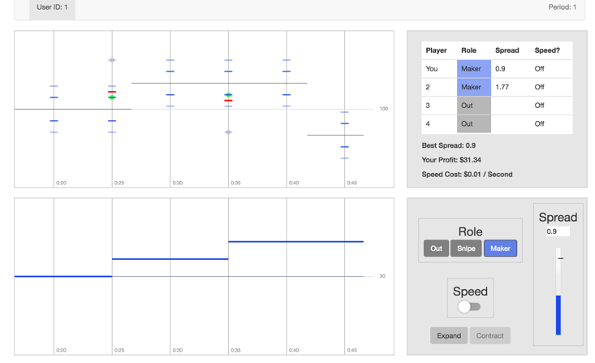

Experimentos en Transacciones de Alta Frecuencia
Eric Aldrich, Dan Friedman, Kristian López-Vargas University of California, Santa Cruz
Pontificia Universidad Católica del Perú
Lima, marzo 2017
Motivación
-
La velocidad de transacciones ha disminuido rápidamente.
-
las Transacciones de Alta Frecuencia (HFTs) representan una gran fracción de operaciones en todo el mundo.
-
A favor: HFT aumenta la liquidez, reduce los costos de transacción.
-
En contra: El costo de la infraestructura de HFT es soportado por los inversionistas; La liquidez desaparece cuando más se necesita.
Plan de investigación
-
Los datos existentes son insuficientes para resolver la controversia.
-
Los experimentos son una alternativa superior para comparar científicamente los formatos de mercado en presencia de HFT.
-
En este paper utilizamos experimentos (de laboratorio (y de campo)) para comparar formatos de mercado relevantes.
Diseño de la investigación
-
Examinar 3 formatos de mercado:
- Subasta doble continua (CDA).
- Dos alternativas: FBA, IEX.
Dos etapas**:
* Laboratorio (en curso). * Campo (torneo abierto, en inicios). * Resultados y métricas de desempeño: liquidez, estabilidad y costos de transacción.
Formato baseline
- Formato de mercado base: subasta doble continua (CDA)
* Organiza el comercio en casi todos los principales intercambios. * Pedidos procesados inmediatamente con prioridad de precio-tiempo. * La tecnología de velocidad es crucial.
Formatos de mercado alternativos
* Formatos alternativos intentan reducir los incentivos por velocidad. 1. Subasta por lote frecuente (FBA): igualdad de prioridad a los pedidos recibidos en el mismo lote (por ejemplo, durante una décima de segundo).
2. IEX: retrasa las órdenes entrantes en 350 $ \ smash {\ mu} $ s, permite órdenes ocultas y "vinculadas".
3. Otros
Implementación en el laboratorio
- Entorno de laboratorio simple :
* Basado en Budish, Cramton y Shim (BCS, 2015). * CDA y FBA
-
Los participantes operan algoritmos que envían órdenes en su nombre.
-
Se añaden características pertinentes de los intercambios modernos de uno en uno.
Ambiente de lab 1: CDA en BCS
* No hay asim de información o costos de inventario, todos son neutrales al riesgo.
-
Valor fundamental, públicamente observado $ V(t) $ (Poisson jump process),
-
Inversores exógenos llegan al mercado aleatoriamente
-
"Makers" postean bids/asks y "snipers" esperan oportunidades de arbitraje.
-
Después de un salto de $ V $:
-
Makers tratan de actualizar.
-
snipers tratan de comprar (vender) una cotización "obsoleta" y liquidar al nuevo valor fundamental.
-
-
Hay la posibilidad de reducir latency con subscripción a una mejor tecnología de comunicación.
Ambiente de lab 1: CDA en BCS
-
En equilibrio, el market spread es positivo $ s^* > 0 $ , pero...
-
No hay ganancias por que hay que pagar la subscripción
-
Sólo queda un maker y el resto es sniper
Ambiente de lab 1: CDA en BCS

Ambiente de lab 2: FBA en BCS
-
Las órdenes de compra venta son recibidas de forma continua.
-
El día de negociación es dividido en muchas fases de igual duración, el batch o lote ($ \tau $).
-
Al cierre del batch, todas las órdenes de compra (venta) se combinan para generar una curva de demanda escalonada (oferta).
-
Se calcula el precio de equilibrio $ p^\star $, y las ordenes inframargales se ejecutan a dicho precio.
Ambiente de lab 2: FBA en BCS: Equilibrio
-
Casi todos los saltos del valor fundamental no ponen en riesgo las órdenes de los makers. Entonces el incentivo a ser rápido se desvanece.
-
Competencia Bertrand: hasta alcanzar bid-ask spread nulo $ s^* = 0 $.
-
Los snipers solo hacen ganancias en eventos muy improbables.
-
Si $\smash{\tau >> \Delta \delta \Rightarrow}$ Nadie invierte en speed.
Ambiente de lab 2: FBA en BCS:

Pilot Experiment
-
Redwood II interface.
-
Two market formats in the session: CDA and FBA.
-
Three 5-minute trading days (periods), per format.
-
Each trading day had two markets (groups of four traders).
-
Session lasted approx 100 minutes.
-
Realizations matched across groups and formats.
Pilot Parameters
-
$\smash{\lambda_V=4}$: $\smash{V(t)}$ jumps every 4 seconds.
-
$\smash{\lambda_I= 3}$: Investor arrivals every 3 seconds.
-
$\smash{V_0 = 100}$: Order of magnitude equal to liquid equities.
-
$\smash{F_V = N(0,0.5)}$.
Pilot Parameters
-
$\smash{c_s= \$0.01/s}$.
-
$\smash{\delta_{slow} = 0.5s}$: About 10 times larger than actual Chicago $\smash{\rightarrow}$ NY latency, after accounting for our time scaling.
-
In FBA, batch interval was 5 secs (1.25 secs, market time); reporting lag was essentially zero; default latency / interval = 0.1.
Summary Results
| MAKER | SNIPE | Speed | Spread | NumTrades | RMSE | |
|---|---|---|---|---|---|---|
| CDA | ||||||
| P1 | 63.5% | 33.8% | 43.2% | 0.80 | 109.5 | 0.50% |
| P2 | 62.2% | 35.5% | 53.5% | 0.46 | 140.5 | 0.37% |
| P3 | 60.0% | 38.3% | 66.0% | 0.40 | 158.0 | 0.39% |
| FBA | ||||||
| P1 | 66.9% | 31.9% | 28.5% | 0.44 | 87.5 | 0.42% |
| P2 | 74.2% | 25.0% | 22.3% | 0.25 | 85.0 | 0.26% |
| P3 | 79.9% | 19.4% | 11.1% | 0.21 | 91.0 | 0.30% |